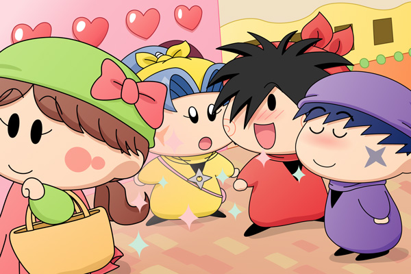

ヤシチ「ヤマネ、もう買い物は良いのか？」
ヤマネ「はい！新しい忍者グッズも確認しましたので
ヤマネは満足なのでございます」
ヤシチ「拙者は釣り竿が欲しいのだが、お小遣いを使い果たして
かりんとうも買えないのだ～(T-T)」
ハンゾー「どうせ兄貴は一匹も釣れないのら～」
サスケ「そうだぜ、お金の無駄遣いだぜ」
ヤシチ「何だとーーっ！」
今日は修行はお休み（サボリ？）。
みんなで街へお買い物にやってきました。
街では目に映るいろいろな物が派手で、妖精忍者にはどれも刺激的です。
面白い売り物、美味しいお菓子、そして美しい女性も・・・。

サスケ「いい匂いだぜ～」
ハンゾー「きれいな人だったのら～」
ヤシチ「おぉ、お前たちもなかなか見る目があるではないか。
拙者のファンクラブにぜひ入会して欲しいのだ」
ヤマネ「ヤシチ兄様？」
場面が変わって、今回は街での妖精忍者を描いてみました（構図の都合でハンゾーが溢れました^^;）。人間界と同じように、妖精界の街でも女性はかわいく着飾って、香水とかもしっかり付けていそうです。そんな女性に男子はみんなメロメロ…というのが今回の絵です。オリフェは都会の大人っぽさを意識して描いてみましたが、果たしてそう見えるかどうか。。
(2009/6/18)